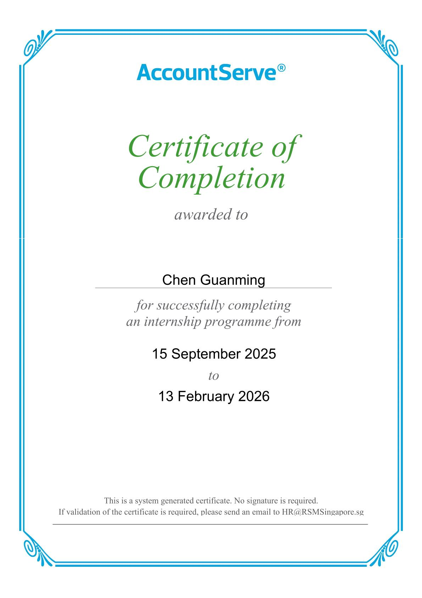

Accounting Internship – RSM Stone Forest AccountServe
Duration: 15 September 2025 – 13 February 2026
- Managed payment workflows for multiple clients, ensuring accuracy and timeliness.
- Executed supplier payments and employee claims using HSBCnet, Standard Chartered Bank, CitiDirect, and J.P. Morgan.
- Performed bookkeeping, maintained financial records, updated monthly foreign currency exchange rates, recorded manual journal entries, and conducted bank reconciliations using Xero.
- Downloaded accounting reports and financial statements to support reporting and month-end closing processes.
- Assisted with basic data entry and transaction recording using QuickBooks.
- Supported month-end closing, including preparation of management accounts and financial statements.
- Assisted in audit queries and contributed to financial reporting exercises such as mock financial statement roll-forward.
- Initiated and developed a VBA automation project to improve Excel-based workflows (Automated Worksheet Password Protection Macro & Automated Bank Import File Preparation Macro), increasing team efficiency and demonstrating problem-solving initiative.
- Documented a User’s Manual Guide for the VBA automation solution to ensure reusability by the team and future interns.
Reflection: This internship strengthened my teamwork, discipline, attention to detail, and accountability, while teaching me the value of taking initiative to improve accounting processes.
Supervisor Testimonial

Certificate of Internship Completion
